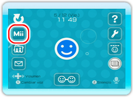
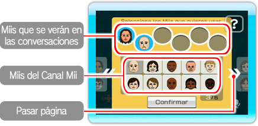

Puedes usar personajes Mii para que te representen en la sala y en la antesala.

Tanto si estás en la sala como en la antesala, selecciona
para mostrar todos los Miis registrados en el Canal Mii.
Elige los Miis que quieres usar en la tabla donde se muestran los Miis del Canal Mii.

Nota: Para cada consola Wii se pueden seleccionar hasta 6 Miis para participar en las conversaciones.
Si quieres quitar uno de los Miis seleccionados para las conversaciones, simplemente señálalo y oprime
.
Cuando hayas elegido qué Miis vas a usar en las conversaciones, selecciona Confirmar. A partir de ahora,
los Miis que has elegido aquí aparecerán en la sala y en la antesala cuando te conectes al canal, aunque podrás cambiarlos en cualquier momento.
Nota: Si no tienes Miis registrados en el Canal Mii o no has seleccionado ninguno en el Canal Wii Speak, se mostrará un
Si en las conversaciones prefieres usar
en lugar de Miis, selecciona Elegir Miis en la sala o en la antesala, y quita todos los Miis que tengas en las casillas circulares.
Para obtener más información sobre cómo crear Miis, consulta el capítulo “El Canal Mii™”
en sección de canales y configuración de la consola del manual de operaciones de la consola Wii.